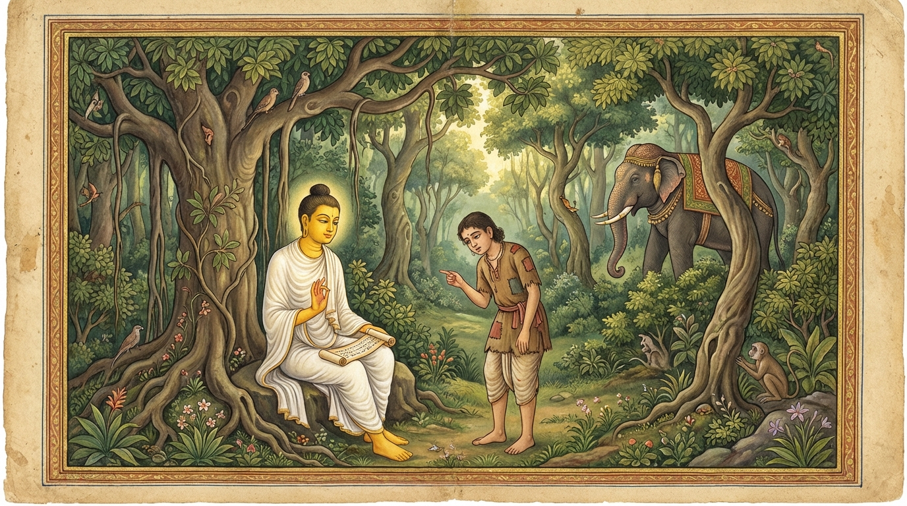

3. නංගලීස ජාතකය (123)
“සියලු තැන්හි ගැළපෙන වචන” (අසබ්බත්ථගාමිං වාචං) යන පදයෙන් ඇරඹෙන මෙම ජාතක කතාව බුදුරජාණන් වහන්සේ ජේතවනාරාමයේ වැඩවසන සමයෙහි ලාළුදායී තෙරුන් අරබයා දේශනා කළ සේක. ඒ තෙරණුවෝ වනාහි දම් දෙසන කල්හි, “මෙතැන මෙය කිව යුතුය, මෙතැන මෙය නොකිව යුතුය” යැයි සුදුසු නුසුදුසු බව නොදනිති. මංගල අවස්ථාවන්හිදී (මළවුන් උදෙසා දෙසන) ‘තිරොකුඩ්ඩ සූත්රය’ ගෙනහැර දක්වමින්, “භින්තීන්ගෙන් පිටත සිටිත්... සතර මංසන්ධි හා තුන් මංසන්ධිවල සිටිත්...” යනාදී වශයෙන් අවමංගලයට සුදුසු බණ කියති. අවමංගල අවස්ථාවල දී පුණ්යානුමෝදනා කරමින් (මංගල කාරණා අඩංගු) ‘මංගල සූත්රය’ ගෙනහැර දක්වමින්, “බොහෝ දෙවි මිනිස්සු මංගල කරුණු සිතූහ” යි පවසා “ඔබලාටත් මෙබඳු මංගල කරුණු සියයක් දහසක් සිදු කිරීමට හැකියාව ලැබේවා!” යි ආශිර්වාද කරති. ඉක්බිති එක් දිනක් දම්සභා මණ්ඩපයෙහි රැස් වූ භික්ෂූන් වහන්සේලා, “ඇවැත්නි, ලාළුදායී තෙරණුවෝ කතාවේ යුතු අයුතුකම් නොදනිති. සෑම තැනකදීම එතැනට නොගැළපෙන වචනම කතා කරති” යැයි කතාවක් ඇති කර ගත්හ. බුදුරජාණන් වහන්සේ එතැනට වැඩම කර, “මහණෙනි, මා එන්නට පෙර කිනම් කතාවකින් යුතුව හුන්නහුදැ?” යි විමසා, “මේ නම් කතාවෙනැ” යි කී කල්හි, “මහණෙනි, ලාළුදායී කතාවෙහි යුතු අයුතු නොදන්නා මෝඩයෙකු වූයේ දැන් පමණක් නොවේ. පෙර ද ඔහු මෙවැනිම අයෙක් විය. මොහු සැමදාම මෝඩ දොඩමළුවෙක්ම විය” යැයි වදාරා අතීත කතාව ගෙනහැර දැක්වූ සේක.
පෙර බරණැස් නුවර බ්රහ්මදත්ත රජු රාජ්ය කරන කල්හි බෝසතාණන් වහන්සේ බමුණු මහසල් කුලයෙහි ඉපදී, වැඩිවියට පැමිණ, තක්සලාවෙන් සියලු ශිල්ප ඉගෙන, බරණැස් නුවර දිසාපාමොක් ආචාර්යවරයා වී පන්සියයක් මානවකයන්ට ශිල්ප උගන්වති. මේ සිසුන් අතර එක් මඳ උත්සාහ ඇති, මෝඩ මානවකයෙක් විය. හෙතෙම ගුරුවරයාට වත්පළිවෙත් කරමින් පිනට උගන්නා අතවැසියෙකු (ධර්මාන්තේවාසික) වශයෙන් ශිල්ප හදාරයි. නුවණ මඳ බැවින් ඉගෙනීමෙහි දක්ෂ නොවේ. නමුත් බෝසතුන්ට බොහෝ උපකාරී ය; දාසයකු මෙන් සියලු කටයුතු කරයි. දිනක් බෝසතාණන් වහන්සේ රාත්රී භෝජනය වළඳා සයනයෙහි වැතිර සිටියදී, අත්පා සම්බාහනය කොට යන්නා වූ ඒ අතවැසියා අමතා, “දරුව, ඇඳ පාදයන්ට යම් ආධාරකයක් තබා යන්නැ” යි කීහ. මානවකයා එක් ඇඳ පාදයකට තැබීමට ආධාරකයක් නොලැබ, ඒ වෙනුවට තම කලවය තබා මුළු රාත්රිය එසේම ගත කළේය.
බෝසතාණන් වහන්සේ අළුයම් කාලයෙහි නැගිට ඔහු දැක, “දරුව, මෙහි වාඩි වී සිටින්නේ ඇයිදැ?” යි ඇසූ සේක. “ගුරුතුමනි, එක ඇඳ කකුලකට ආධාරකයක් සොයා ගත නොහැකි වූ බැවින්, ඒ වෙනුවට මගේ කලවය තබාගෙන සිටියෙමි” යි ඔහු පිළිතුරු දුන්නේය. බෝසතාණන් වහන්සේ සංවේගයට පත් ව, “මේ මානවකයා මට මහත් උපකාරී ය. එහෙත් මෙපමණ අතවැසියන් අතරෙහි මොහුම ඉගෙනීමෙහි අදක්ෂ ය. මොහුට ශිල්ප ඉගෙනීමට නොහැකිය, එසේ නම් මම කෙසේ මොහු උගතකු කරම් දැ?” යි සිතූහ. ඉක්බිති ඔහුට මෙසේ සිතිණි: “ඒ සඳහා උපායක් ඇත. මේ මානවකයා දර හා කොළ ගෙන ඒමට වනයට ගොස් ආපසු ආ කල්හි, ‘අද ඔබ කිනම් දෙයක් දුටුවෙහි ද? කිනම් දෙයක් කළෙහි ද?’ යි මම විචාරමි. එවිට ඔහු ‘අද මම මේ මේ දේ දුටිමි, මේ මේ දේ කළෙමි’ යි කියන්නේය. එවිට මම ‘ඔබ දුටු ඒ දේ කෙබඳුදැ?’ යි අසන්නෙමි. එවිට ඔහු ‘එය මෙබඳු යැ’ යි උපමා හා හේතු දක්වමින් විස්තර කරනු ඇත. මේ ආකාරයෙන් අලුත් අලුත් උපමා හා කරුණු කියවා, මේ උපායෙන් මොහු පණ්ඩිතයකු කරන්නෙමි.” එසේ සිතා ආචාර්යවරයා ඔහු කැඳවා, “දරුව මානවකය, මෙතැන් පටන් ඔබ දර පිණිස හෝ කොළ පිණිස ගිය තැනකදී යමක් ඔබ දුටුවේ ද, ඇසුවේ ද, බුදින ලද්දේ ද, බොන ලද්දේ ද, කන ලද්දේ ද, ඒ සියල්ල විත් මට දන්වන්නැ” යි කීහ.
ඒ අතවැසියා ද “එසේය, මැනවැ” යි පිළිගෙන, එක් දිනක් අනෙක් මානවකයන් සමග දර සඳහා වනයට ගියේ, එහිදී සර්පයකු දැක ආපසු අවුත්, “ගුරුතුමනි, මම සර්පයකු දුටිමි” යි දැන්වීය. “දරුව, සර්පයා කෙබඳු ද?” “ගුරුතුමනි, හරියටම නගුලිසක් (නගුල් දණ්ඩක්) වැනිය.” “දරුව, ඉතා අගෙයි! ඔබ ගෙනහැර දැක්වූයේ මනහර උපමාවකි. සර්පයෝ නගුලිස හා සමාන වෙත් මැයි.” ඉක්බිති බෝසතාණන් වහන්සේ, “මානවකයා හොඳ උපමාවක් ගෙනහැර දැක්වීය. මොහු පණ්ඩිතයකු කිරීමට මට පුළුවන” යි සිතූහ. මානවකයා නැවත එක් දවසක් වනයෙහි දී ඇතකු දැක, “ගුරුතුමනි, මම ඇතකු දුටුවෙමි” යි කීය. “දරුව, ඇතා කෙබඳු වේ ද?” “ගුරුතුමනි, හරියටම නගුලිසක් වැනිය.” බෝසතාණන් වහන්සේ, “ඇතාගේ සොඬ නගුලිසක් වැනිය. දළ ආදිය වෙනත් ස්වරූප ගනී. මොහු මෝඩ බැවින් කොටස් වශයෙන් වෙන් කොට කීමට නොහැකිව, ඇතාගේ සොඬය අරමුණු කරගෙන මෙසේ කීවා විය හැකියැ” යි සිතා නිශ්ශබ්ද වූහ. නැවත එක් දවසක් ආරාධනයක් ලැබ ගිය තැනක දී උක් දඬු ලැබී, “ගුරුතුමනි, අපි අද උක් කෑවෙමු” යි කීවේය. “උක් කුමක් වැනි දැ?” යි ඇසූ කල්හි, “හරියටම නගුලිසක් වැනියැ” යි කීය. ආචාර්යවරයා “තරමක් දුරට හෝ ගැළපෙන කරුණක් කීවේයැ” යි සිතා නිශ්ශබ්ද විය.

නැවත එක් දවසක් නිමන්ත්රණ භෝජනයක දී සමහරු උක් හකුරු සහ කිරි (වැනි දේ) වැළඳූහ. ඔහු ආපසු ගුරුන් වෙත අවුත්, “ගුරුතුමනි, මම අද දීකිරි සහ කිරි වැළඳුවෙමි” යි කීය. “දීකිරි සහ කිරි කෙබඳු දැ?” යි ඇසූ කල්හි, “හරියටම නගුලිසක් හා සමානයැ” යි කීය. එවිට ආචාර්යවරයා මෙසේ සිතීය: “මේ මානවකයා පළමුව ‘සර්පයා නගුලිස වැනියැ’ යි කීම සුදුසුය. දෙවනුව ‘ඇතා නගුලිස වැනියැ’ යි කීම සොඬය නිසා ගැළපේ. තෙවනුව ‘උක් ගස නගුලිස වැනියැ’ යි කීම ද යම් තාක් දුරට ගැළපේ. එහෙත් දීකිරි හා කිරි වනාහි සුදු පැහැතිය; දමන ලද භාජනයේ හැඩය ගනී. මේ සඳහා එම උපමාව කිසිසේත් නොගැළපේ. මේ මෝඩ අතවැසියාට ශිල්ප ඉගැන්විය නොහැකිය.” මෙසේ සිතා ඔහු මෙම ගාථාව පැවසීය:
“අඥාන පුද්ගලයා හැම තැනට ම නුසුදුසු වචන ම හැම තැන දී ම පවසයි. මොහු දීකිරි ගැන හෝ නගුලිස ගැන නොදනී. ඔහු දීකිරි ද නගුලිසක් යැයි සිතන්නේ ය.”
එහි සංක්ෂිප්ත අර්ථය මෙසේය: යම් වචනයක් උපමා වශයෙන් හැම තැනටම නොගැළපේ ද, අඥාන පුද්ගලයා (බාලො) එම “සියලු තැන්හි නොගැළපෙන වචන” (අසබ්බත්ථගාමිං වාචං) ම “හැම තැන දී ම කියයි” (සබ්බත්ථ භාසති). දීකිරි කෙබඳුදැ යි විචාළ කල්හිත් ‘නගුලිස වැනියැ’ යි කියයි. එසේ කියන විට, “මොහු දීකිරි හෝ නගුලිස ගැන නොදනී” (නායං දධිං වෙදි න නඞ්ගලීසං). ඒ මන්ද යත්? “මොහු දීකිරි ද නගුලිසක් යැයි සිතන” (දධිප්පයං මඤ්ඤති නඞ්ගලීසං) බැවිනි. දීකිරි සහ කිරි යන දෙකම මොහු දකින්නේ නගුලිසක් ලෙස ය. මොහු එබඳු මෝඩයෙකි. “මොහුගෙන් ඇති ඵලය කිමදැ” යි සිතූ ආචාර්යවරයා, සෙසු අතවැසියන්ට ධර්ම කතාව කියා, ඒ බාල අතවැසියාට මඟ වියදම් දී ඔහු පිටත් කර හැරියේය.
බුදුරජාණන් වහන්සේ මේ ධර්ම දේශනාව ගෙනහැර දක්වා ජාතකය ඏළපා දෙසූ සේක. “එකල ඒ මෝඩ මානවකයා වූයේ වර්තමාන ලාළුදායී ය. එකල දිසාපාමොක් ආචාර්යවරයා වී සිටියේ නම් මම ම වෙමි.”
තුන්වන වූ නංගලීස ජාතක වර්ණනාව නිමාවිය.